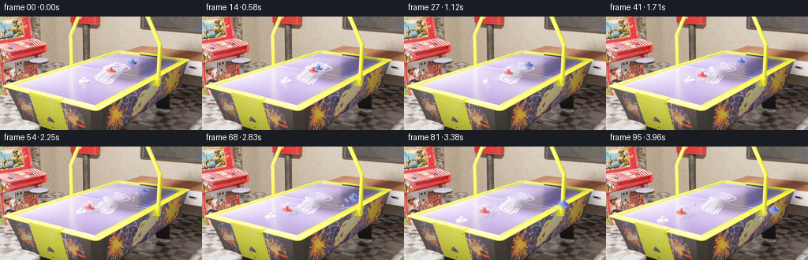
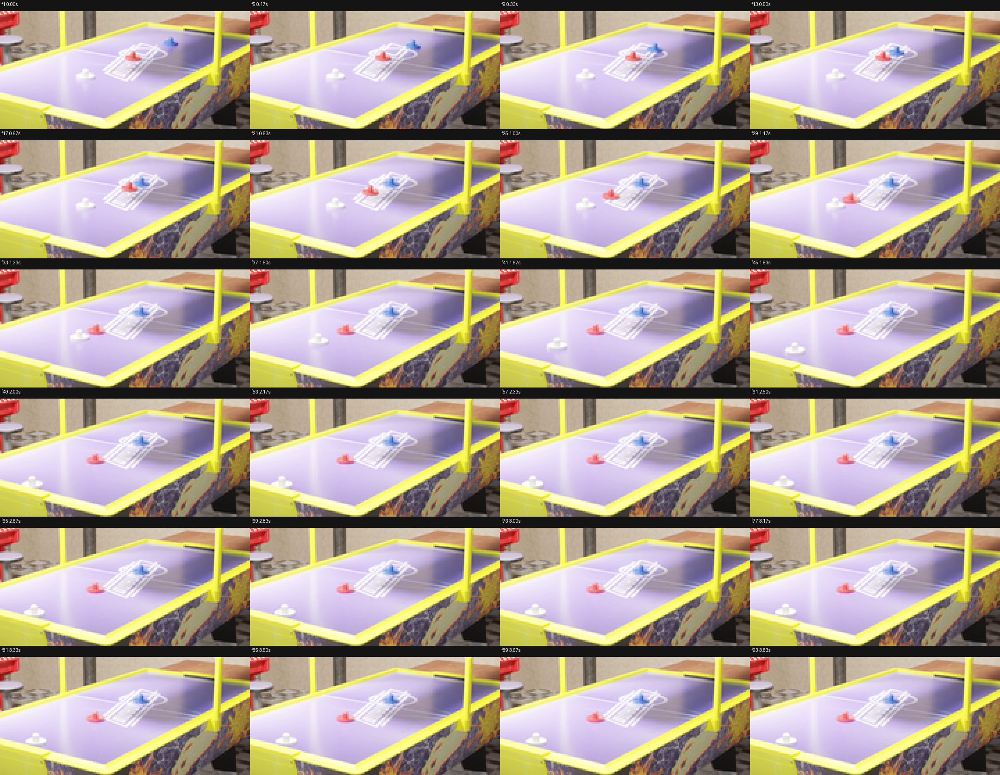
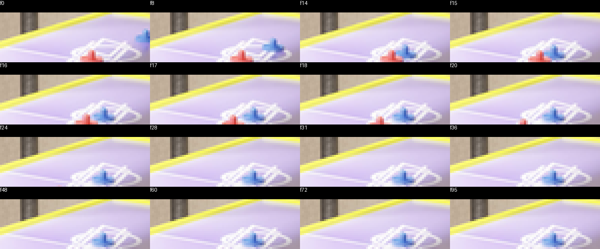
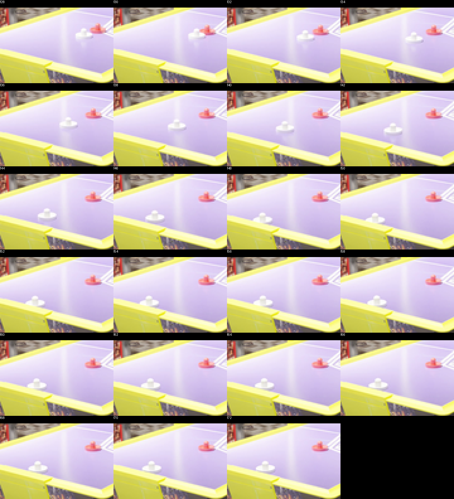
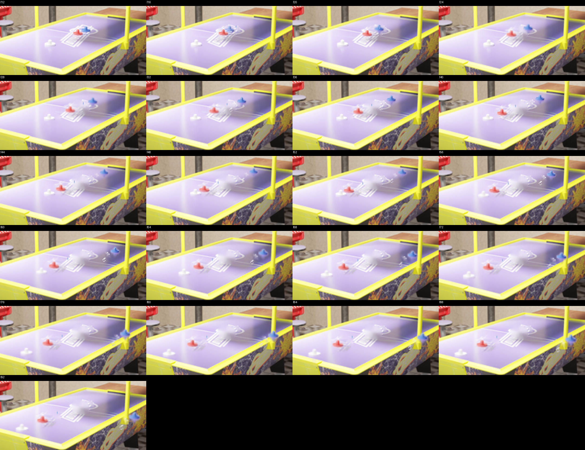
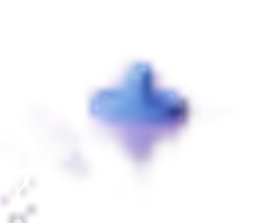
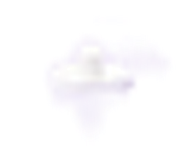
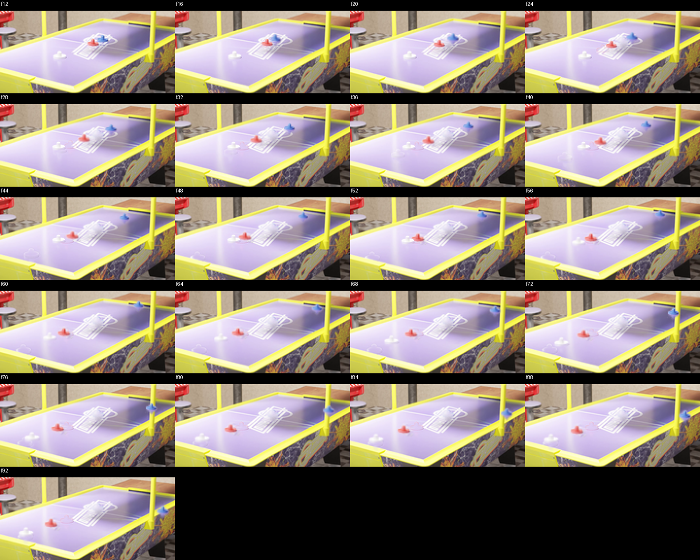
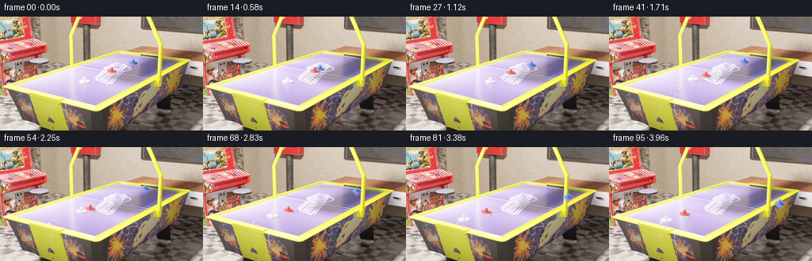

CODING AGENTS AS PIXEL WORLD MODELS
traex/GPT-5.6-Sol · pcve_0000
点击播放 · 原生 RGB 像素
编辑前的完整原视频
上方为编辑结果；原视频是模型获准使用的输入。下方为逐轮保存的编辑候选。
逐轮保存的候选
回放视频、检查图与代码变化。
每份候选均可单独播放。实际图片检查记录在下方工具轨迹中。
候选 01播放与检查图
点击播放 · 原生 RGB 像素

展开代码变化
--- 上一保存版本
+++ 本次保存版本
@@ -0,0 +1,210 @@
+from pathlib import Path
+import warnings
+
+import cv2
+import numpy as np
+
+import artifact_io
+
+HERE = Path(__file__).resolve().parent
+SRC = np.load(HERE / "source_pixels.npz")["rgb"]
+N, H, W, _ = SRC.shape
+assert SRC.shape == (96, 144, 256, 3) and SRC.dtype == np.uint8
+
+
+def interp_track(keys, n=N):
+ """Linear interpolation of screen-space trajectory keyframes."""
+ keys = sorted(keys)
+ ts = np.arange(n, dtype=np.float32)
+ kf = np.asarray([k[0] for k in keys], np.float32)
+ xs = np.asarray([k[1] for k in keys], np.float32)
+ ys = np.asarray([k[2] for k in keys], np.float32)
+ return np.c_[np.interp(ts, kf, xs), np.interp(ts, kf, ys)]
+
+
+# Factual center tracks, measured from the supplied RGB sequence. They are also
+# used to expose a clean table plate before the counterfactual trajectories are
+# composited.
+BLUE_SRC = interp_track([
+ (0, 167.7, 58.5), (3, 163.8, 59.4), (6, 159.4, 60.5),
+ (9, 154.9, 62.5), (12, 150.1, 64.1), (15, 146.9, 65.5),
+ (18, 146.5, 65.5), (95, 146.1, 65.7),
+])
+RED_SRC = interp_track([
+ (0, 140.8, 68.0), (14, 140.9, 68.0), (15, 140.0, 68.4),
+ (16, 138.0, 68.9), (17, 136.9, 69.6), (18, 134.7, 70.1),
+ (20, 131.5, 71.3), (22, 127.8, 72.7), (24, 124.2, 74.1),
+ (26, 120.1, 75.1), (28, 116.7, 76.6), (30, 113.3, 77.8),
+ (32, 112.8, 78.1), (95, 112.3, 78.3),
+])
+WHITE_SRC = interp_track([
+ (0, 105.5, 81.0), (27, 105.5, 81.0), (28, 105.4, 81.0),
+ (29, 105.3, 81.1), (30, 104.7, 81.3), (31, 102.9, 82.0),
+ (34, 97.7, 84.0), (37, 92.7, 85.9), (40, 87.3, 88.2),
+ (43, 81.9, 90.6), (46, 76.7, 92.4), (48, 73.0, 93.4),
+ (49, 72.3, 93.5), (95, 75.3, 92.8),
+])
+
+
+def ellipse_mask(center, rx, ry):
+ yy, xx = np.ogrid[:H, :W]
+ cx, cy = center
+ return (((xx - cx) / rx) ** 2 + ((yy - cy) / ry) ** 2 <= 1.0)
+
+
+# Recover the unoccluded playfield from all source frames. Pixels occupied by
+# any mallet in a given frame are ignored; the temporal median retainsains the
+# printed rink lines and the original lighting. Tiny never-visible holes are
+# filled spatially.
+masked = SRC.astype(np.float32)
+for i in range(N):
+ occupied = (ellipse_mask(BLUE_SRC[i], 14.0, 10.5) |
+ ellipse_mask(RED_SRC[i], 14.0, 10.5) |
+ ellipse_mask(WHITE_SRC[i], 14.0, 10.5))
+ masked[i, occupied] = np.nan
+with warnings.catch_warnings():
+ warnings.simplefilter("ignore", category=RuntimeWarning)
+ plate_f = np.nanmedian(masked, axis=0)
+holes = np.isnan(plate_f).any(axis=2)
+plate_f = np.nan_to_num(plate_f, nan=0.0)
+plate = np.clip(plate_f, 0, 255).astype(np.uint8)
+if holes.any():
+ plate = cv2.inpaint(plate, holes.astype(np.uint8) * 255, 4,
+ cv2.INPAINT_TELEA)
+
+
+def extract_sprite(frame_index, center, rx=15, ry=12):
+ """Extract one supplied mallet as an antialiased local RGBA sprite."""
+ cx, cy = center
+ x0, y0 = int(round(cx)) - rx, int(round(cy)) - ry
+ donor = SRC[frame_index, y0:y0 + 2 * ry + 1,
+ x0:x0 + 2 * rx + 1].astype(np.float32)
+ clean = plate[y0:y0 + 2 * ry + 1,
+ x0:x0 + 2 * rx + 1].astype(np.float32)
+ diff = np.max(np.abs(donor - clean), axis=2)
+ yy, xx = np.mgrid[-ry:ry + 1, -rx:rx + 1]
+ support = np.clip(1.18 - np.sqrt((xx / (rx - 1)) ** 2 +
+ (yy / (ry - 1)) ** 2), 0, 1)
+ alpha = np.clip((diff - 4.0) / 18.0, 0, 1) * support
+ alpha = cv2.GaussianBlur(alpha.astype(np.float32), (3, 3), 0.55)
+ alpha[diff > 35] = np.maximum(alpha[diff > 35], 0.96)
+ return donor, np.clip(alpha, 0, 1)
+
+
+# Isolated factual views preserve the exact modeled shape, shading, and color.
+RED_SPRITE = extract_sprite(5, RED_SRC[5])
+BLUE_SPRITE = extract_sprite(1, BLUE_SRC[1])
+WHITE_SPRITE = extract_sprite(12, WHITE_SRC[12])
+
+
+def erase_object(frame, center, rx=14.3, ry=10.8):
+ """Locally restore the clean plate with a soft, non-rectangular seam."""
+ m = ellipse_mask(center, rx, ry).astype(np.float32)
+ m = cv2.GaussianBlur(m, (5, 5), 0.9)[..., None]
+ frame[:] = frame * (1.0 - m) + plate.astype(np.float32) * m
+
+
+def paste_sprite(frame, sprite, center, scale):
+ rgb, alpha = sprite
+ nh = max(3, int(round(rgb.shape[0] * scale)))
+ nw = max(3, int(round(rgb.shape[1] * scale)))
+ rgb2 = cv2.resize(rgb, (nw, nh), interpolation=cv2.INTER_LINEAR)
+ a2 = cv2.resize(alpha, (nw, nh), interpolation=cv2.INTER_LINEAR)
+ cx, cy = center
+ x0, y0 = int(round(cx - nw / 2)), int(round(cy - nh / 2))
+ x1, y1 = x0 + nw, y0 + nh
+ sx0, sy0 = max(0, -x0), max(0, -y0)
+ sx1, sy1 = nw - max(0, x1 - W), nh - max(0, y1 - H)
+ dx0, dy0 = max(0, x0), max(0, y0)
+ dx1, dy1 = min(W, x1), min(H, y1)
+ if dx0 >= dx1 or dy0 >= dy1:
+ return
+ a = a2[sy0:sy1, sx0:sx1, None]
+ fg = rgb2[sy0:sy1, sx0:sx1]
+ frame[dy0:dy1, dx0:dx1] = (frame[dy0:dy1, dx0:dx1] * (1-a) +
+ fg * a)
+
+
+def at_time(track, t):
+ if t <= 0:
+ return track[0].copy()
+ if t >= N - 1:
+ v = track[-1] - track[-2]
+ return track[-1] + (t - (N - 1)) * v
+ j = int(np.floor(t))
+ q = float(t - j)
+ return track[j] * (1-q) + track[j+1] * q
+
+
+# Counterfactual mechanics. For a 1m blue striker colliding elastically with a
+# stationary 4m red mallet, v_blue'=-3/5 v and v_red'=2/5 v. At the later 4m
+# red / 1m white collision, red retains 3/5 of its incoming speed and white
+# receives 8/5. Relative to the factual equal-mass transfer this gives:
+# red before second impact 0.40x, red afterward 0.24x, white afterward 0.64x.
+BLUE = BLUE_SRC.copy()
+RED = RED_SRC.copy()
+WHITE = WHITE_SRC.copy()
+impact1 = 15
+impact2 = 49
+
+# Red: time-warp the factual path to 40% speed up to the delayed white impact.
+for i in range(impact1, impact2 + 1):
+ RED[i] = at_time(RED_SRC, 14.0 + 0.40 * (i - 14.0))
+red_contact = RED[impact2].copy()
+red_factual_v = (RED_SRC[28] - RED_SRC[20]) / 8.0
+red_after_v = 0.24 * red_factual_v
+for i in range(impact2 + 1, N):
+ RED[i] = red_contact + red_after_v * (i - impact2)
+
+# White waits for the delayed contact, then follows the factual line at 64%
+# speed. The endpoint is clamped because it meets the same near cushion.
+white_rest = WHITE_SRC[0].copy()
+for i in range(28, impact2 + 1):
+ WHITE[i] = white_rest
+for i in range(impact2 + 1, N):
+ st = min(49.0, 28.0 + 0.64 * (i - impact2))
+ WHITE[i] = at_time(WHITE_SRC, st)
+
+# Blue rebounds toward the far cushion at 60% of its incident speed. At the
+# cushion its velocity is reflected about the measured slanted rail tangent.
+contact_b = BLUE_SRC[impact1].copy()
+incoming = (BLUE_SRC[12] - BLUE_SRC[3]) / 9.0
+v_rebound = -0.60 * incoming
+rail_frame = 50
+for i in range(impact1, rail_frame + 1):
+ BLUE[i] = contact_b + v_rebound * (i - impact1)
+rail_pos = BLUE[rail_frame].copy()
+tangent = np.array([1.0, 0.17], np.float32)
+tangent /= np.linalg.norm(tangent)
+normal = np.array([-tangent[1], tangent[0]], np.float32)
+v_after_rail = v_rebound - 2.0 * np.dot(v_rebound, normal) * normal
+for i in range(rail_frame + 1, N):
+ BLUE[i] = rail_pos + v_after_rail * (i - rail_frame)
+
+
+out = SRC.copy().astype(np.float32)
+for i in range(impact1 + 1, N):
+ # Remove only factual moving bodies; the room, table, camera, and changing
+ # source illumination remain pixel-for-pixel from the supplied frame.
+ erase_object(out[i], BLUE_SRC[i])
+ erase_object(out[i], RED_SRC[i])
+ if i >= 28:
+ erase_object(out[i], WHITE_SRC[i])
+
+ bodies = [
+ (BLUE[i], BLUE_SPRITE, np.clip(1.0 + 0.010*(BLUE[i, 1]-59.0), .88, 1.22)),
+ (RED[i], RED_SPRITE, np.clip(1.0 + 0.010*(RED[i, 1]-68.0), .90, 1.25)),
+ ]
+ if i >= 28:
+ bodies.append((WHITE[i], WHITE_SPRITE,
+ np.clip(1.0 + 0.012*(WHITE[i, 1]-81.0), .90, 1.25)))
+ # Painter's order follows screen depth on the oblique tabletop.
+ for pos, sprite, scale in sorted(bodies, key=lambda z: z[0][1]):
+ paste_sprite(out[i], sprite, pos, float(scale))
+
+out = np.clip(np.rint(out), 0, 255).astype(np.uint8)
+# Preserve the complete factual history up to the first visible consequence.
+out[:impact1 + 1] = SRC[:impact1 + 1]
+
+artifact_io.save(out, HERE)
+print("saved", out.shape, out.dtype)
候选 02播放与检查图
点击播放 · 原生 RGB 像素

展开代码变化
--- 上一保存版本
+++ 本次保存版本
@@ -58,9 +58,10 @@
# filled spatially.
masked = SRC.astype(np.float32)
for i in range(N):
- occupied = (ellipse_mask(BLUE_SRC[i], 14.0, 10.5) |
- ellipse_mask(RED_SRC[i], 14.0, 10.5) |
- ellipse_mask(WHITE_SRC[i], 14.0, 10.5))
+ # Tight supports keep the white rink markings available to the median.
+ occupied = (ellipse_mask(BLUE_SRC[i], 9.5, 8.0) |
+ ellipse_mask(RED_SRC[i], 10.0, 7.0) |
+ ellipse_mask(WHITE_SRC[i] + (0, 2), 10.0, 9.0))
masked[i, occupied] = np.nan
with warnings.catch_warnings():
warnings.simplefilter("ignore", category=RuntimeWarning)
@@ -73,7 +74,7 @@
cv2.INPAINT_TELEA)
-def extract_sprite(frame_index, center, rx=15, ry=12):
+def extract_sprite(frame_index, center, rx=10, ry=8):
"""Extract one supplied mallet as an antialiased local RGBA sprite."""
cx, cy = center
x0, y0 = int(round(cx)) - rx, int(round(cy)) - ry
@@ -83,23 +84,27 @@
x0:x0 + 2 * rx + 1].astype(np.float32)
diff = np.max(np.abs(donor - clean), axis=2)
yy, xx = np.mgrid[-ry:ry + 1, -rx:rx + 1]
- support = np.clip(1.18 - np.sqrt((xx / (rx - 1)) ** 2 +
+ support = np.clip(1.30 - np.sqrt((xx / (rx - 1)) ** 2 +
(yy / (ry - 1)) ** 2), 0, 1)
- alpha = np.clip((diff - 4.0) / 18.0, 0, 1) * support
+ alpha = np.clip((diff - 5.0) / 16.0, 0, 1) * support
alpha = cv2.GaussianBlur(alpha.astype(np.float32), (3, 3), 0.55)
alpha[diff > 35] = np.maximum(alpha[diff > 35], 0.96)
return donor, np.clip(alpha, 0, 1)
# Isolated factual views preserve the exact modeled shape, shading, and color.
-RED_SPRITE = extract_sprite(5, RED_SRC[5])
-BLUE_SPRITE = extract_sprite(1, BLUE_SRC[1])
-WHITE_SPRITE = extract_sprite(12, WHITE_SRC[12])
-
-
-def erase_object(frame, center, rx=14.3, ry=10.8):
+RED_SPRITE = extract_sprite(5, RED_SRC[5], 10, 8)
+BLUE_SPRITE = extract_sprite(1, BLUE_SRC[1], 10, 9)
+WHITE_SPRITE = extract_sprite(12, WHITE_SRC[12] + (0, 2), 10, 10)
+
+
+def erase_object(frame, center, rx=11.0, ry=9.0):
"""Locally restore the clean plate with a soft, non-rectangular seam."""
- m = ellipse_mask(center, rx, ry).astype(np.float32)
+ # Gate the replacement by disagreement with the plate. Thus a rink line
+ # running under the support is retained instead of being painted away.
+ discrepancy = np.max(np.abs(frame - plate.astype(np.float32)), axis=2)
+ strength = np.clip((discrepancy - 6.0) / 16.0, 0, 1)
+ m = ellipse_mask(center, rx, ry).astype(np.float32) * strength
m = cv2.GaussianBlur(m, (5, 5), 0.9)[..., None]
frame[:] = frame * (1.0 - m) + plate.astype(np.float32) * m
@@ -170,7 +175,8 @@
contact_b = BLUE_SRC[impact1].copy()
incoming = (BLUE_SRC[12] - BLUE_SRC[3]) / 9.0
v_rebound = -0.60 * incoming
-rail_frame = 50
+# The far rail is reached at about frame 60 (the blue body has an ~9 px radius).
+rail_frame = 60
for i in range(impact1, rail_frame + 1):
BLUE[i] = contact_b + v_rebound * (i - impact1)
rail_pos = BLUE[rail_frame].copy()
候选 03播放与检查图
点击播放 · 原生 RGB 像素

展开代码变化
代码未变化；重新保存了产物。
可观测工具轨迹
实际执行的命令与返回图片。
命令 1exit 0
/bin/bash -lc "cat prompt.txt && printf '\\n--- GENERATION RULES ---\\n' && cat GENERATION_RULES.md"
命令 2exit 1
/bin/bash -lc "find . -maxdepth 2 -type f -printf '%p\\n' | sort && printf '\\n--- ffprobe ---\\n' && for f in *.mp4 *.mov *.mkv *.webm; do [ -e \""'$f" ] && ffprobe -v error -show_entries format=filename,duration,size:stream=index,codec_name,codec_type,width,height,r_frame_rate,avg_frame_rate -of default=noprint_wrappers=1 "$f"; done'
命令 3exit 0
/bin/bash -lc "cat source_info.json; printf '\\n--- task_spec ---\\n'; cat task_spec.json; printf '\\n--- artifact_io ---\\n'; sed -n '1,240p' artifact_io.py"
命令 4exit 0
/bin/bash -lc "python - <<'PY'
import numpy as np
from PIL import Image
p=np.load('source_pixels.npz')
print(p.files)
for k in p.files: print(k,p[k].shape,p[k].dtype,p[k].min(),p[k].max())
PY"命令 5exit 0
/bin/bash -lc "cat > /tmp/analyze.py <<'PY'
import numpy as np
from PIL import Image,ImageDraw
import cv2
A=np.load('source_pixels.npz')['rgb']
for i in range(96):
im=A[i]
hsv=cv2.cvtColor(im,cv2.COLOR_RGB2HSV)
roi=np.zeros((144,256),bool); roi[43:120,55:225]=1
masks={
'red':roi&(hsv[:,:,0]<10)&(hsv[:,:,1]>100)&(hsv[:,:,2]>120),
'blue':roi&(hsv[:,:,0]>105)&(hsv[:,:,0]<140)&(hsv[:,:,1]>70)&(hsv[:,:,2]>80),
'white':roi&(hsv[:,:,1]<45)&(hsv[:,:,2]>195),
}
out=[]
for name,m in masks.items():
n,lab,st,cen=cv2.connectedComponentsWithStats(m.astype('uint8'))
comps=[]
for j in range(1,n):
x,y,w,h,area=st[j]
if area>=2: comps.append((area,round(cen[j][0],1),round(cen[j][1],1),x,y,w,h))
comps=sorted(comps,reverse=True)[:5]
out.append(name+':'+str(comps))
if i%2==0: print(i,*out)
# create enlarged crop sheet for frames every 4
ids=list(range(0,96,4)); tw,th=180*3,85*3
sheet=Image.new('RGB',(tw*4,(th+24)*6),(20,20,20)); d=ImageDraw.Draw(sheet)
for k,i in enumerate(ids):
crop=Image.fromarray(A[i]).crop((45,35,225,120)).resize((tw,th),Image.Resampling.NEAREST)
x=(k%4)*tw;y=(k//4)*(th+24)
sheet.paste(crop,(x,y+24));d.text((x+3,y+3),f'f{i+1} {i/24:.2f}s',fill='white')
sheet.save('analysis_crops.png')
PY
python /tmp/analyze.py > tracking.txt
sed -n '1,120p' tracking.txt"命令 6exit 0
/bin/bash -lc "cat > .tmp/analyze.py <<'PY'
import numpy as np
from PIL import Image,ImageDraw
import cv2
A=np.load('source_pixels.npz')['rgb']
for i in range(96):
im=A[i]
hsv=cv2.cvtColor(im,cv2.COLOR_RGB2HSV)
roi=np.zeros((144,256),bool); roi[43:120,55:225]=1
masks={
'red':roi&(hsv[:,:,0]<10)&(hsv[:,:,1]>100)&(hsv[:,:,2]>120),
'blue':roi&(hsv[:,:,0]>105)&(hsv[:,:,0]<140)&(hsv[:,:,1]>70)&(hsv[:,:,2]>80),
'white':roi&(hsv[:,:,1]<45)&(hsv[:,:,2]>195),
}
out=[]
for name,m in masks.items():
n,lab,st,cen=cv2.connectedComponentsWithStats(m.astype('uint8'))
comps=[]
for j in range(1,n):
x,y,w,h,area=st[j]
if area>=2: comps.append((area,round(cen[j][0],1),round(cen[j][1],1),x,y,w,h))
comps=sorted(comps,reverse=True)[:5]
out.append(name+':'+str(comps))
if i%2==0: print(i,*out)
ids=list(range(0,96,4)); tw,th=180*3,85*3
sheet=Image.new('RGB',(tw*4,(th+24)*6),(20,20,20)); d=ImageDraw.Draw(sheet)
for k,i in enumerate(ids):
crop=Image.fromarray(A[i]).crop((45,35,225,120)).resize((tw,th),Image.Resampling.NEAREST)
x=(k%4)*tw;y=(k//4)*(th+24)
sheet.paste(crop,(x,y+24));d.text((x+3,y+3),f'f{i+1} {i/24:.2f}s',fill='white')
sheet.save('analysis_crops.png')
PY
python .tmp/analyze.py > tracking.txt
sed -n '1,120p' tracking.txt"命令 7exit 0
/bin/bash -lc "cat > .tmp/tracks.py <<'PY'
import cv2,numpy as np
A=np.load('source_pixels.npz')['rgb']
for typ in ('red','blue'):
pred=np.array([140.,68.]) if typ=='red' else np.array([168.,59.])
print('\\n',typ)
for i,im in enumerate(A):
hsv=cv2.cvtColor(im,cv2.COLOR_RGB2HSV); H,S,V=[hsv[:,:,k] for k in range(3)]
if typ=='red': m=((H<12)|(H>172))&(S>100)&(V>120)
else: m=(H>105)&(H<140)&(S>75)&(V>75)
# local table central
yy,xx=np.ogrid[:144,:256]; m &= (xx>=70)&(xx<180)&(yy>=45)&(yy<100)
n,l,st,c=cv2.connectedComponentsWithStats(m.astype('uint8'))
opts=[]
for j in range(1,n):
x,y,w,h,a=st[j]
if a>=3 and w<=20 and h<=15:
dist=np.linalg.norm(c[j]-pred)
opts.append((dist,-a,j))
if opts:
j=min(opts)[2]; ctr=c[j]; pred=.55*pred+.45*ctr
print(f'{i:02d} {ctr[0]:5.1f} {ctr[1]:5.1f} area{st[j,4]:2d}',end=' | ')
else: print(f'{i:02d} ----',end=' | ')
if i%4==3:print()
PY
python .tmp/tracks.py"命令 8exit 0
/bin/bash -lc "python - <<'PY'
from PIL import Image,ImageDraw
import numpy as np
A=np.load('source_pixels.npz')['rgb']
ids=[0,8,14,15,16,17,18,20,24,28,31,36,48,60,72,95]
S=Image.new('RGB',(300*4,(100+25)*4))
d=ImageDraw.Draw(S)
for k,i in enumerate(ids):
im=Image.fromarray(A[i]).crop((95,45,170,70)).resize((300,100),Image.Resampling.NEAREST)
x=k%4*300;y=k//4*125;S.paste(im,(x,y+25));d.text((x,y),f'f{i}',fill='white')
S.save('objects_zoom.png')
PY"命令 9exit 0
/bin/bash -lc "python - <<'PY'
import numpy as np
A=np.load('source_pixels.npz')['rgb'].astype(int)
# mean/max difference backgrounds and frame exact runs
for i in range(1,96):
d=np.abs(A[i]-A[i-1]); n=(d.max(2)>0).sum(); mean=d.mean();
if n>100: print(i,n,round(mean,3),d.max())
PY"命令 10exit 0
/bin/bash -lc "python - <<'PY'
import cv2,numpy as np
A=np.load('source_pixels.npz')['rgb']
pred=np.array([106.,80.])
for i,im in enumerate(A):
hsv=cv2.cvtColor(im,cv2.COLOR_RGB2HSV);H,S,V=[hsv[:,:,k] for k in range(3)]
yy,xx=np.ogrid[:144,:256]; m=(S<45)&(V>238)&(xx>50)&(xx<130)&(yy>68)&(yy<125)
n,l,st,c=cv2.connectedComponentsWithStats(m.astype('uint8'))
opts=[]
for j in range(1,n):
x,y,w,h,a=st[j]
if 2<=a<=150 and w<25 and h<15:
dist=np.linalg.norm(c[j]-pred)
opts.append((dist,-a,j))
if opts:
j=min(opts)[2];ctr=c[j]
if np.linalg.norm(ctr-pred)<12: pred=ctr
print(i, np.round(ctr,1),st[j].tolist(), 'pred',pred)
PY"命令 11exit 0
/bin/bash -lc "python - <<'PY'
from PIL import Image,ImageDraw
import numpy as np
A=np.load('source_pixels.npz')['rgb']; ids=list(range(28,73,2))
S=Image.new('RGB',(360*4,(240+24)*6),(0,0,0));d=ImageDraw.Draw(S)
for k,i in enumerate(ids):
im=Image.fromarray(A[i]).crop((40,60,130,120)).resize((360,240),Image.Resampling.NEAREST)
x=k%4*360;y=k//4*264;S.paste(im,(x,y+24));d.text((x,y),f'f{i}',fill='white')
S.save('white_zoom.png')
PY"命令 12exit 0
/bin/bash -lc "cat > .tmp/flow.py <<'PY'
import cv2,numpy as np
A=np.load('source_pixels.npz')['rgb']
g=[cv2.cvtColor(x,cv2.COLOR_RGB2GRAY) for x in A]
# inspect good features bbox
mask=np.zeros((144,256),np.uint8);mask[70:92,92:118]=255
p=cv2.goodFeaturesToTrack(g[0],30,.01,1,mask=mask)
print('features',p.reshape(-1,2))
for i in range(95):
q,st,e=cv2.calcOpticalFlowPyrLK(g[i],g[i+1],p,None,winSize=(15,15),maxLevel=2,criteria=(cv2.TERM_CRITERIA_EPS|cv2.TERM_CRITERIA_COUNT,20,.01))
ok=st[:,0].astype(bool)&(e[:,0]<20)
if ok.sum():
delta=np.median(q[ok]-p[ok],axis=0)[0]
p[ok]=q[ok]
print(i+1,ok.sum(),np.round(np.median(p[ok],axis=0)[0],2) if ok.sum() else None,'d',np.round(delta,2) if ok.sum() else None)
PY
python .tmp/flow.py"命令 13exit 0
/bin/bash -lc "cat > generate.py <<'PY'
from pathlib import Path
import warnings
import cv2
import numpy as np
import artifact_io
HERE = Path(__file__).resolve().parent
SRC = np.load(HERE / \"source_pixels.npz\")[\"rgb\"]
N, H, W, _ = SRC.shape
assert SRC.shape == (96, 144, 256, 3) and SRC.dtype == np.uint8
def interp_track(keys, n=N):
\"\"\"Linear interpolation of screen-space trajectory keyframes.\"\"\"
keys = sorted(keys)
ts = np.arange(n, dtype=np.float32)
kf = np.asarray([k[0] for k in keys], np.float32)
xs = np.asarray([k[1] for k in keys], np.float32)
ys = np.asarray([k[2] for k in keys], np.float32)
return np.c_[np.interp(ts, kf, xs), np.interp(ts, kf, ys)]
# Factual center tracks, measured from the supplied RGB sequence. They are also
# used to expose a clean table plate before the counterfactual trajectories are
# composited.
BLUE_SRC = interp_track([
(0, 167.7, 58.5), (3, 163.8, 59.4), (6, 159.4, 60.5),
(9, 154.9, 62.5), (12, 150.1, 64.1), (15, 146.9, 65.5),
(18, 146.5, 65.5), (95, 146.1, 65.7),
])
RED_SRC = interp_track([
(0, 140.8, 68.0), (14, 140.9, 68.0), (15, 140.0, 68.4),
(16, 138.0, 68.9), (17, 136.9, 69.6), (18, 134.7, 70.1),
(20, 131.5, 71.3), (22, 127.8, 72.7), (24, 124.2, 74.1),
(26, 120.1, 75.1), (28, 116.7, 76.6), (30, 113.3, 77.8),
(32, 112.8, 78.1), (95, 112.3, 78.3),
])
WHITE_SRC = interp_track([
(0, 105.5, 81.0), (27, 105.5, 81.0), (28, 105.4, 81.0),
(29, 105.3, 81.1), (30, 104.7, 81.3), (31, 102.9, 82.0),
(34, 97.7, 84.0), (37, 92.7, 85.9), (40, 87.3, 88.2),
(43, 81.9, 90.6), (46, 76.7, 92.4), (48, 73.0, 93.4),
(49, 72.3, 93.5), (95, 75.3, 92.8),
])
def ellipse_mask(center, rx, ry):
yy, xx = np.ogrid[:H, :W]
cx, cy = center
return (((xx - cx) / rx) ** 2 + ((yy - cy) / ry) ** 2 <= 1.0)
# Recover the unoccluded playfield from all source frames. Pixels occupied by
# any mallet in a given frame are ignored; the temporal median retainsains the
# printed rink lines and the original lighting. Tiny never-visible holes are
# filled spatially.
masked = SRC.astype(np.float32)
for i in range(N):
occupied = (ellipse_mask(BLUE_SRC[i], 14.0, 10.5) |
ellipse_mask(RED_SRC[i], 14.0, 10.5) |
ellipse_mask(WHITE_SRC[i], 14.0, 10.5))
masked[i, occupied] = np.nan
with warnings.catch_warnings():
warnings.simplefilter(\"ignore\", category=RuntimeWarning)
plate_f = np.nanmedian(masked, axis=0)
holes = np.isnan(plate_f).any(axis=2)
plate_f = np.nan_to_num(plate_f, nan=0.0)
plate = np.clip(plate_f, 0, 255).astype(np.uint8)
if holes.any():
plate = cv2.inpaint(plate, holes.astype(np.uint8) * 255, 4,
cv2.INPAINT_TELEA)
def extract_sprite(frame_index, center, rx=15, ry=12):
\"\"\"Extract one supplied mallet as an antialiased local RGBA sprite.\"\"\"
cx, cy = center
x0, y0 = int(round(cx)) - rx, int(round(cy)) - ry
donor = SRC[frame_index, y0:y0 + 2 * ry + 1,
x0:x0 + 2 * rx + 1].astype(np.float32)
clean = plate[y0:y0 + 2 * ry + 1,
x0:x0 + 2 * rx + 1].astype(np.float32)
diff = np.max(np.abs(donor - clean), axis=2)
yy, xx = np.mgrid[-ry:ry + 1, -rx:rx + 1]
support = np.clip(1.18 - np.sqrt((xx / (rx - 1)) ** 2 +
(yy / (ry - 1)) ** 2), 0, 1)
alpha = np.clip((diff - 4.0) / 18.0, 0, 1) * support
alpha = cv2.GaussianBlur(alpha.astype(np.float32), (3, 3), 0.55)
alpha[diff > 35] = np.maximum(alpha[diff > 35], 0.96)
return donor, np.clip(alpha, 0, 1)
# Isolated factual views preserve the exact modeled shape, shading, and color.
RED_SPRITE = extract_sprite(5, RED_SRC[5])
BLUE_SPRITE = extract_sprite(1, BLUE_SRC[1])
WHITE_SPRITE = extract_sprite(12, WHITE_SRC[12])
def erase_object(frame, center, rx=14.3, ry=10.8):
\"\"\"Locally restore the clean plate with a soft, non-rectangular seam.\"\"\"
m = ellipse_mask(center, rx, ry).astype(np.float32)
m = cv2.GaussianBlur(m, (5, 5), 0.9)[..., None]
frame[:] = frame * (1.0 - m) + plate.astype(np.float32) * m
def paste_sprite(frame, sprite, center, scale):
rgb, alpha = sprite
nh = max(3, int(round(rgb.shape[0] * scale)))
nw = max(3, int(round(rgb.shape[1] * scale)))
rgb2 = cv2.resize(rgb, (nw, nh), interpolation=cv2.INTER_LINEAR)
a2 = cv2.resize(alpha, (nw, nh), interpolation=cv2.INTER_LINEAR)
cx, cy = center
x0, y0 = int(round(cx - nw / 2)), int(round(cy - nh / 2))
x1, y1 = x0 + nw, y0 + nh
sx0, sy0 = max(0, -x0), max(0, -y0)
sx1, sy1 = nw - max(0, x1 - W), nh - max(0, y1 - H)
dx0, dy0 = max(0, x0), max(0, y0)
dx1, dy1 = min(W, x1), min(H, y1)
if dx0 >= dx1 or dy0 >= dy1:
return
a = a2[sy0:sy1, sx0:sx1, None]
fg = rgb2[sy0:sy1, sx0:sx1]
frame[dy0:dy1, dx0:dx1] = (frame[dy0:dy1, dx0:dx1] * (1-a) +
fg * a)
def at_time(track, t):
if t <= 0:
return track[0].copy()
if t >= N - 1:
v = track[-1] - track[-2]
return track[-1] + (t - (N - 1)) * v
j = int(np.floor(t))
q = float(t - j)
return track[j] * (1-q) + track[j+1] * q
# Counterfactual mechanics. For a 1m blue striker colliding elastically with a
# stationary 4m red mallet, v_blue'=-3/5 v and v_red'=2/5 v. At the later 4m
# red / 1m white collision, red retains 3/5 of its incoming speed and white
# receives 8/5. Relative to the factual equal-mass transfer this gives:
# red before second impact 0.40x, red afterward 0.24x, white afterward 0.64x.
BLUE = BLUE_SRC.copy()
RED = RED_SRC.copy()
WHITE = WHITE_SRC.copy()
impact1 = 15
impact2 = 49
# Red: time-warp the factual path to 40% speed up to the delayed white impact.
for i in range(impact1, impact2 + 1):
RED[i] = at_time(RED_SRC, 14.0 + 0.40 * (i - 14.0))
red_contact = RED[impact2].copy()
red_factual_v = (RED_SRC[28] - RED_SRC[20]) / 8.0
red_after_v = 0.24 * red_factual_v
for i in range(impact2 + 1, N):
RED[i] = red_contact + red_after_v * (i - impact2)
# White waits for the delayed contact, then follows the factual line at 64%
# speed. The endpoint is clamped because it meets the same near cushion.
white_rest = WHITE_SRC[0].copy()
for i in range(28, impact2 + 1):
WHITE[i] = white_rest
for i in range(impact2 + 1, N):
st = min(49.0, 28.0 + 0.64 * (i - impact2))
WHITE[i] = at_time(WHITE_SRC, st)
# Blue rebounds toward the far cushion at 60% of its incident speed. At the
# cushion its velocity is reflected about the measured slanted rail tangent.
contact_b = BLUE_SRC[impact1].copy()
incoming = (BLUE_SRC[12] - BLUE_SRC[3]) / 9.0
v_rebound = -0.60 * incoming
rail_frame = 50
for i in range(impact1, rail_frame + 1):
BLUE[i] = contact_b + v_rebound * (i - impact1)
rail_pos = BLUE[rail_frame].copy()
tangent = np.array([1.0, 0.17], np.float32)
tangent /= np.linalg.norm(tangent)
normal = np.array([-tangent[1], tangent[0]], np.float32)
v_after_rail = v_rebound - 2.0 * np.dot(v_rebound, normal) * normal
for i in range(rail_frame + 1, N):
BLUE[i] = rail_pos + v_after_rail * (i - rail_frame)
out = SRC.copy().astype(np.float32)
for i in range(impact1 + 1, N):
# Remove only factual moving bodies; the room, table, camera, and changing
# source illumination remain pixel-for-pixel from the supplied frame.
erase_object(out[i], BLUE_SRC[i])
erase_object(out[i], RED_SRC[i])
if i >= 28:
erase_object(out[i], WHITE_SRC[i])
bodies = [
(BLUE[i], BLUE_SPRITE, np.clip(1.0 + 0.010*(BLUE[i, 1]-59.0), .88, 1.22)),
(RED[i], RED_SPRITE, np.clip(1.0 + 0.010*(RED[i, 1]-68.0), .90, 1.25)),
]
if i >= 28:
bodies.append((WHITE[i], WHITE_SPRITE,
np.clip(1.0 + 0.012*(WHITE[i, 1]-81.0), .90, 1.25)))
# Painter's order follows screen depth on the oblique tabletop.
for pos, sprite, scale in sorted(bodies, key=lambda z: z[0][1]):
paste_sprite(out[i], sprite, pos, float(scale))
out = np.clip(np.rint(out), 0, 255).astype(np.uint8)
# Preserve the complete factual history up to the first visible consequence.
out[:impact1 + 1] = SRC[:impact1 + 1]
artifact_io.save(out, HERE)
print(\"saved\", out.shape, out.dtype)
PY
python generate.py
mkdir -p candidates/candidate_01
cp pixels.npz inspection.png transition_check.png candidates/candidate_01/
"命令 14exit 0
/bin/bash -lc "python - <<'PY'
from PIL import Image,ImageDraw
import numpy as np
p=np.load('pixels.npz')['pixels'].transpose(2,0,1)
A=np.empty((*p.shape,3),np.uint8);A[...,0]=p>>16;A[...,1]=(p>>8)&255;A[...,2]=p&255
ids=list(range(12,96,4)); S=Image.new('RGB',(540*4,(255+22)*6),(0,0,0));d=ImageDraw.Draw(S)
for k,i in enumerate(ids):
im=Image.fromarray(A[i]).crop((45,35,225,120)).resize((540,255),Image.Resampling.NEAREST)
x=k%4*540;y=k//4*277;S.paste(im,(x,y+22));d.text((x+2,y+2),f'f{i}',fill='white')
S.save('candidate_zoom.png')
PY"命令 15exit 1
/bin/bash -lc "python - <<'PY'
# instrument current generate only until exec? easiest replicate import causes save
import generate
from PIL import Image
for n,s in [('red',generate.RED_SPRITE),('blue',generate.BLUE_SPRITE),('white',generate.WHITE_SPRITE)]:
rgb,a=s
x=np.dstack([rgb.astype('uint8'),(a*255).astype('uint8')])
Image.fromarray(x).resize((310,250)).save(n+'_sprite.png')
PY"命令 16exit 0
/bin/bash -lc "python - <<'PY'
import generate,numpy as np
from PIL import Image
Image.fromarray(generate.plate).resize((768,432)).save('plate.png')
for n,s in [('red',generate.RED_SPRITE),('blue',generate.BLUE_SPRITE),('white',generate.WHITE_SPRITE)]:
rgb,a=s; x=np.dstack([rgb.astype('uint8'),(a*255).astype('uint8')])
Image.fromarray(x).resize((310,250)).save(n+'_sprite.png')
PY"命令 17exit 0
/bin/bash -lc "python generate.py
mkdir -p candidates/candidate_02
cp pixels.npz inspection.png transition_check.png candidates/candidate_02/
python - <<'PY'
from PIL import Image,ImageDraw
import numpy as np
p=np.load('pixels.npz')['pixels'].transpose(2,0,1)
A=np.empty((*p.shape,3),np.uint8);A[...,0]=p>>16;A[...,1]=(p>>8)&255;A[...,2]=p&255
ids=list(range(12,96,4)); S=Image.new('RGB',(360*4,(170+22)*6),(0,0,0));d=ImageDraw.Draw(S)
for k,i in enumerate(ids):
im=Image.fromarray(A[i]).crop((45,35,225,120)).resize((360,170),Image.Resampling.NEAREST)
x=k%4*360;y=k//4*192;S.paste(im,(x,y+22));d.text((x+2,y+2),f'f{i}',fill='white')
S.save('candidate_zoom_02.png')
PY
python - <<'PY'
from pathlib import Path
import numpy as np
p=np.load('pixels.npz')['pixels']
assert p.shape==(144,256,96) and p.dtype==np.uint32
assert Path('index.html').is_file() and len(list(Path('frames').glob('*.png')))==96
print('verified pixels',p.shape,p.dtype,'frames',len(list(Path('frames').glob('*.png'))))
PY"视觉工具实际返回图片 1

视觉工具实际返回图片 2

视觉工具实际返回图片 3

视觉工具实际返回图片 4

视觉工具实际返回图片 5

视觉工具实际返回图片 6

视觉工具实际返回图片 7
视觉工具实际返回图片 8

视觉工具实际返回图片 9

视觉工具实际返回图片 10

视觉工具实际返回图片 11

保存候选 3 份；完成命令 17 次；可验证图片返回 11 张。原始 API 响应与完整日志保留在本地。